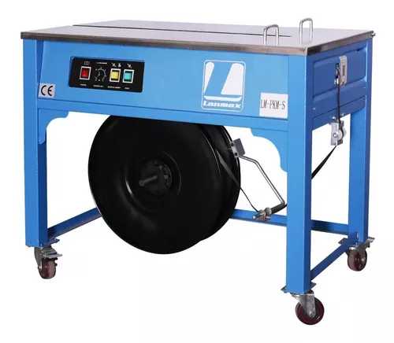

Máquinas Manuais
Existem mais de 15 modelos de manuais que executamos serviço de manutenção, aqui está um exemplo de um esticador muito utilizado.

Máquinas Elétricas
As máquinas elétricas trazem o conforto quando a produção necessita de alta produtividade, contamos com o conhecimento em mais de 10 modelos delas.

Máquinas Pneumáticas
As máquinas pneumaticas vem com tudo principalmente quando o assunto é fita de aço, contam também com modelos para fita pet. Somos especialistas na manutenção por ter aquele toque especial em medidas que a olho nu passam batidas.

Máquinas SemiAutomáticas
Máquinas SemiAutomáticas geralmente são utilizadas para o lacre de caixas. Este tipo de máquina traz a autonomia na produtividade, por ser semi automática sua função é desenvolvida de forma simples e rápida.
